초록 (Abstract)
인공지능의 목표 중 하나는 매우 다양한 작업을 해결할 수 있는 에이전트를 구축하는 것이다. 최근 텍스트 안내형 이미지 합성 분야의 발전은 복잡하고 새로운 이미지를 생성하는 인상적인 능력을 갖춘 모델들을 탄생시켰으며, 여러 도메인에 걸쳐 조합적 일반화(combinatorial generalization) 능력을 보여주었다. 이러한 성공에 영감을 받아, 본 연구에서는 이러한 도구들을 더 범용적인 에이전트를 구축하는 데 사용할 수 있는지 탐구한다. 구체적으로, 우리는 순차적 의사결정 문제를 텍스트 조건부 비디오 생성 문제로 프레이밍한다. 여기서 플래너는 원하는 목표에 대한 텍스트 인코딩 명세가 주어지면 미래에 계획된 행동을 묘사하는 미래 프레임 세트를 합성하고, 생성된 비디오에서 제어 행동을 추출한다. 언어를 기본 목표 명세로 활용함으로써, 우리는 새로운 목표에 대해 자연스럽고 조합적으로 일반화할 수 있다. 제안된 '정책으로서의 비디오(policy-as-video)' 정식화는 서로 다른 상태 및 행동 공간을 가진 환경들을 하나의 통합된 이미지 공간으로 표현할 수 있게 하며, 이는 예를 들어 다양한 로봇 조작 작업 전반에 걸친 학습과 일반화를 가능하게 한다. 마지막으로, 사전 학습된 언어 임베딩과 인터넷에서 널리 이용 가능한 비디오를 활용함으로써, 이 접근법은 실제 로봇에 대한 매우 사실적인 비디오 계획을 예측하여 지식 전이를 가능하게 한다111비디오 시각화는 https://universal-policy.github.io에서 확인할 수 있다..
1 서론 (Introduction)
다양한 작업 세트를 해결하는 모델을 구축하는 것은 비전 및 언어 도메인에서 지배적인 패러다임이 되었다. 자연어 처리 분야에서 대규모 사전 학습 모델들은 새로운 언어 작업에 대해 놀라운 제로샷 학습 능력을 보여주었다 [1, 2, 3]. 마찬가지로 컴퓨터 비전 분야에서도 [4, 5]에서 제안된 것과 같은 모델들이 뛰어난 제로샷 분류 및 객체 인식 능력을 보여주었다. 자연스러운 다음 단계는 이러한 도구들을 사용하여 여러 환경에 걸쳐 서로 다른 의사결정 작업을 완료할 수 있는 에이전트를 구축하는 것이다.
그러나 이러한 에이전트를 학습시키는 것은 환경의 다양성이라는 본질적인 한계에 부딪힌다. 서로 다른 환경은 고유한 상태-행동 공간(예: MuJoCo의 관절 공간 및 연속 제어는 Atari의 이미지 공간 및 이산 행동과 근본적으로 다름)에서 작동하기 때문이다. 이러한 다양성은 작업과 환경 전반의 지식 공유, 학습 및 일반화를 저해한다. 시퀀스 모델링 프레임워크에서 범용 토큰을 사용하여 서로 다른 환경을 인코딩하려는 상당한 노력이 있었지만 [6], 이러한 접근 방식이 사전 학습된 비전 및 언어 모델에 내재된 풍부한 지식을 보존하고 이 지식을 활용하여 다운스트림 강화 학습(RL) 작업으로 전이할 수 있는지는 불분명하다. 나아가, 환경 전반에 걸쳐 서로 다른 작업을 명시하는 보상 함수를 구축하는 것도 어렵다.
본 연구에서는 서로 다른 환경에서 행동과 관측 동작을 전달하기 위한 범용 인터페이스로 비디오(즉, 이미지 시퀀스)를 활용하고, 작업 설명을 표현하기 위한 범용 인터페이스로 텍스트를 활용함으로써 환경 다양성과 보상 명세의 문제를 해결한다. 특히, 우리는 현재 이미지 프레임과 현재 목표(즉, 다음 고수준 단계)를 설명하는 텍스트 구절을 순차적으로 조건으로 삼아 이미지 시퀀스 형태의 궤적을 생성하는 플래너로서 비디오 생성기를 설계하며, 그 후 역동학 모델(inverse dynamics model)을 사용하여 생성된 비디오로부터 근본적인 행동을 추출한다. 이러한 접근 방식을 통해 언어와 비디오의 범용적 특성을 활용하여 다양한 환경에서 새로운 목표와 작업으로 일반화할 수 있다. 구체적으로, 우리는 비디오 확산(video diffusion)을 사용하여 텍스트 조건부 비디오 생성 모델을 구현한다. 그런 다음 합성된 프레임으로부터 일련의 기저 행동들을 회귀하여 계획된 궤적을 실행하기 위한 정책을 구성한다. 작업의 언어 설명은 제어 행동과 매우 밀접하게 연관되어 있기 때문에, 텍스트 조건부 비디오 생성은 자연스럽게 비디오의 행동 관련 부분에 생성을 집중시킨다. 제안된 모델인 UniPi는 그림 1에 시각화되어 있다.
우리는 텍스트 조건부 비디오 합성을 통해 정책 생성을 정식화하는 것이 다음과 같은 장점을 가진다는 것을 발견했다:
조합적 일반화 (Combinatorial Generalization). 언어의 풍부한 조합적 특성을 활용하여 환경에서 새로운 조합적 행동을 합성할 수 있다. 이를 통해 제안된 접근 방식은 섹션 4.1에서 보여주는 바와 같이 객체들을 기하학적 관계의 보지 못한 새로운 조합으로 재배치할 수 있다.
다중 작업 학습 (Multi-task Learning). 행동 예측을 비디오 예측 문제로 정식화하면 여러 다양한 작업에 걸친 학습이 용이해진다. 우리는 섹션 4.2에서 이것이 어떻게 텍스트 조건부 작업 전반의 학습을 가능하게 하고, 테스트 시 미세조정(finetuning) 없이 새로운 작업으로 일반화할 수 있는지 보여준다.
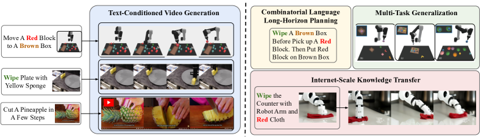
행동 계획 (Action Planning). 비디오 생성 과정은 목표 달성을 위한 행동을 나타내는 프레임 시퀀스를 생성하는 계획 과정에 대응한다. 이러한 계획 과정은 자연스럽게 계층적이다. 즉, 더 구체적인 계획으로 세분화하기 전에 목표를 향한 시간적으로 희소한(temporally sparse) 이미지 시퀀스를 먼저 생성할 수 있다. 또한, 계획 과정은 조종 가능(steerable)하다. 즉, 테스트 시 샘플링을 통해 도입된 새로운 제약 조건에 의해 계획 생성이 편향될 수 있다. 마지막으로, 계획은 인간이 직관적으로 해석할 수 있는 비디오 공간에서 생성되므로 행동 검증과 계획 진단이 쉽다. 우리는 표 2에서 계층적 샘플링의 효과를, 그림 7에서 조종 가능성을 보여준다.
인터넷 규모의 지식 전이 (Internet-Scale Knowledge Transfer). 인터넷에서 수집한 대규모 텍스트-비디오 데이터셋으로 비디오 생성 모델을 사전 학습함으로써, 새로운 환경에서 텍스트 조건부 정책을 구축하는 데 도움이 되는 방대한 "데모" 저장소를 확보할 수 있다. 우리는 섹션 4.3에서 이것이 어떻게 언어 지시사항으로부터 로봇 모션 비디오의 사실적인 합성을 가능하게 하는지 보여준다.
본 연구의 주요 기여는 텍스트 조건부 비디오 생성을 다양한 행동을 합성할 수 있는 범용 계획 전략으로 정식화하는 것이다. 이러한 접근 방식은 실행할 후속 행동을 현재 상태로부터 직접 예측하는 RL의 전형적인 정책 생성 방식과는 다르지만, 우리는 UniPi가 다양한 도메인에 걸쳐 전통적인 정책 생성 방법보다 주목할 만한 일반화 이점을 보여줌을 입증한다.
2 문제 정식화 (Problem Formulation)
우리는 먼저 RL에서 흔히 사용되는 마르코프 결정 과정(MDP)의 대안으로 새로운 추상화인 통합 예측 의사결정 과정(Unified Predictive Decision Process, UPDP)을 제안하고, 확산 모델을 통한 UPDP의 구현을 보여준다.
2.1 마르코프 결정 과정 (Markov Decision Process)
마르코프 결정 과정 [7]은 많은 순차적 의사결정 문제를 정식화하는 데 사용되는 광범위한 추상화이다. 많은 RL 알고리즘이 MDP로부터 도출되어 경험적인 성공을 거두었으나 [8, 9, 10], 기존 알고리즘들은 일반적으로 서로 다른 환경 전반에 걸쳐 조합적으로 일반화하지 못한다. 이러한 어려움은 기저에 깔린 MDP 추상화의 특정 측면들로 거슬러 올라갈 수 있다.
-
i)
서로 다른 제어 환경 간의 보편적인 상태 인터페이스의 부재. 실제로 서로 다른 환경은 일반적으로 독립된 고유의 상태 공간을 가지기 때문에, 모든 환경을 표현하려면 복잡한 상태 표현을 구축해야 하므로 학습이 어려워진다.
-
ii)
MDP에서 실수 값을 가지는 보상 함수의 명시적 요구. RL 문제는 보통 MDP에서 누적 보상을 최대화하는 것으로 정의된다. 그러나 많은 실제 응용 분야에서 보상을 설계하고 전이하는 방법은 불분명하며 환경마다 다르다.
-
iii)
MDP의 동역학 모델은 환경과 에이전트에 의존적이다. 구체적으로, 행동 하에서 상태 간의 전이를 특징짓는 동역학 모델 은 에이전트의 환경 및 행동 공간에 명시적으로 의존하며, 이는 에이전트와 태스크에 따라 크게 다를 수 있다.
2.2 통합 예측 의사결정 프로세스(Unified Predictive Decision Process)
이러한 어려움은 다양한 환경에서 통합된 순차적 의사결정을 위한 대안적 추상화를 구축하도록 영감을 준다. 통합 예측 의사결정 프로세스(Unified Predictive Decision Process, UPDP)라 명명된 우리의 추상화는 환경 전반의 보편적 인터페이스로 이미지를 활용하고, 보상 설계를 피하기 위해 텍스트를 태스크 지정자로 활용하며, 지식 공유와 일반화를 가능하게 하기 위해 환경 의존적 제어와 분리된 태스크 무관형 플래닝 모듈을 활용한다.
형식적으로, 우리는 UPDP를 튜플 으로 정의한다. 여기서 은 이미지의 관측 공간을 나타내고, 는 텍스트 태스크 설명의 공간을 나타내며, 은 유한한 타임스텝 길이(horizon length)이고, 는 조건부 비디오 생성기이다. 즉, 는 첫 번째 프레임 과 태스크 설명 에 의해 결정되는 -단계 이미지 시퀀스에 대한 조건부 분포이다. 직관적으로, 는 목표 태스크 을 완료하기 위한 가능한 경로를 보여주는 -단계 이미지 궤적을 합성한다. 단순화를 위해 우리는 유한한 타임스텝의 에피소드형 태스크에 집중한다.
UPDP 이 주어지면, 우리는 궤적-태스크 조건부 정책 을 -단계 행동 시퀀스 에 대한 조건부 분포로 정의한다. 이상적으로, 는 주어진 태스크 에 대해 UPDP 에서 주어진 궤적 를 달성하는 행동 시퀀스의 조건부 분포를 지정한다. 이러한 정렬을 달성하기 위해, 우리는 기존 경험의 데이터셋 에 접근할 수 있는 오프라인 RL 시나리오를 고려하며, 이 데이터셋으로부터 와 을 모두 추정할 수 있다.
MDP와 대조적으로, UPDP는 비디오 기반 궤적을 직접 모델링하며 텍스트 태스크 설명 외에 보상 함수를 명시할 필요가 없다. 비디오 관측 공간 과 태스크 설명 공간 은 모두 자연스럽게 환경 전반에 걸쳐 공유되고 인간이 쉽게 해석할 수 있으므로, 임의의 비디오 기반 플래너 를 편리하게 재사용하고, 전이하며, 디버깅할 수 있다. MDP 대비 UPDP의 또 다른 이점은 UPDP가 을 통한 비디오 기반 플래닝을 를 사용하는 지연된 행동 선택과 분리한다는 점이다. 이러한 디자인 선택은 플래닝 결정을 행동 특정적 메커니즘으로부터 격리하여, 플래너가 환경 및 에이전트와 무관해지도록 한다.
UPDP는 MDP 상에서 암묵적으로 플래닝을 수행하고 주어진 지시사항을 바탕으로 최적의 궤적을 직접 출력하는 것으로 이해할 수 있다. 이러한 UPDP 추상화는 보상 설계, 상태 추출 및 명시적 플래닝을 우회하며, 이미지 기반 상태 공간의 비마르코프식(non-Markovian) 모델링을 가능하게 한다. 그러나 UPDP에서 플래너를 학습시키려면 비디오와 태스크 설명이 필요한 반면, 전통적인 MDP는 그러한 데이터를 요구하지 않으므로, 주어진 태스크에 MDP와 UPDP 중 어느 것이 더 적합한지는 어떤 유형의 학습 데이터를 사용할 수 있는지에 달려 있다. 비마르코프식 모델과 비디오 및 텍스트 데이터의 요구사항이 MDP에 비해 UPDP에서 추가적인 어려움을 유발하지만, 대규모 웹 스케일 데이터셋에서 사전 학습된 기존의 대규모 텍스트-비디오 모델을 활용하여 이러한 복잡성을 완화할 수 있다.
2.3 UPDP를 위한 확산 모델(Diffusion Models)
을 이미지의 시퀀스라고 하자. 우리는 조건부 분포 을 캡처하기 위해 최근 확산 모델의 상당한 발전을 활용하며, 이를 UPDP에서 텍스트 및 초기 프레임 조건부 비디오 생성기로 활용할 것이다. 우리는 UPDP 공식이 변분 오토인코더(variational autoencoder) [11], 에너지 기반 모델(energy-based model) [12, 13], 또는 생성적 적대 신경망(generative adversarial network) [14]과 같은 다른 확률적 모델과도 호환된다는 점을 강조한다. 완전성을 위해 핵심 공식을 높은 수준에서 간략하게 다루고, 세부 사항은 배경 문헌 [15]으로 미룬다.
무조건부 모델부터 시작한다. 연속 시간 확산 모델은 순방향 프로세스 을 정의하며, 여기서 과 는 사전 정의된 스케줄을 가진 스칼라이다. 역방향 프로세스 도 정의되며, 이는 노이즈 제거 모델 를 학습하여 순방향 프로세스를 역전시킨다. 이에 대응하여 는 조상 샘플러(ancestral sampler) [16] 또는 수치 적분 [17]을 사용하여 이 역방향 프로세스를 시뮬레이션함으로써 생성될 수 있다. 우리의 경우, 무조건부 모델은 텍스트 지시사항 과 초기 이미지 모두에 조건화되도록 추가로 조정되어야 한다. 조건부 디노이저를 으로 나타낸다. 우리는 분류기 없는 가이드(classifier-free guidance) [18]을 활용하고 샘플링을 위한 역방향 프로세스에서 를 디노이저로 사용하며, 여기서 은 텍스트 및 첫 번째 프레임 조건화의 강도를 제어한다.
3 비디오를 통한 의사결정
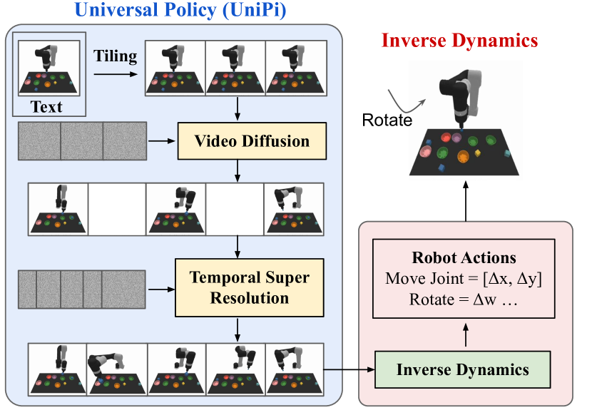
다음으로 제안하는 접근법인 UniPi를 자세히 설명한다. 이는 확산 UPDP의 구체적인 구현체이다. UniPi는 그림 2에 나타난 바와 같이, 섹션 2에서 논의된 두 가지 주요 구성 요소를 포함한다. (i) 첫 번째 프레임과 태스크 설명에 조건화된 비디오를 합성하는 보편적 비디오 기반 플래너 를 위한 확산 모델, 그리고 (ii) 역동역학 모델링을 통해 생성된 비디오로부터 행동 시퀀스를 추론하는 태스크 특정적 행동 생성기 이다.
3.1 보편적 비디오 기반 플래너
최근 텍스트-비디오 모델 [19]의 성공에 힘입어, 우리는 초기 프레임과 텍스트 태스크 설명이 주어졌을 때 미래 이미지 프레임을 충실히 합성할 수 있는 궤적 플래너로서 비디오 확산 모듈을 구축하고자 한다. 그러나 우리가 원하는 플래너는 일반적으로 텍스트 설명이 주어지면 제약 없는 비디오를 생성하는 텍스트-비디오 모델 [20, 19]의 일반적인 설정과는 다르다. 비디오 생성을 통한 플래닝은 모델이 지정된 이미지에서 시작하는 제약된 비디오를 생성할 수 있어야 하고, 그 후 목표 태스크를 완료해야 하므로 더 어렵다. 또한, 비디오의 합성된 프레임 전반에 걸쳐 유효한 행동 추론을 보장하기 위해, 비디오 예측 모듈은 합성된 비디오 프레임 전반에서 기저의 환경 상태를 추적할 수 있어야 한다.
조건부 비디오 합성. 유효하고 실행 가능한 계획을 생성하기 위해, 텍스트-비디오 모델은 에이전트와 환경의 초기 구성을 묘사하는 초기 이미지에서 시작하는 제약된 비디오 계획을 합성해야 한다. 이 문제를 해결하는 한 가지 방법은 [21]에서 수행된 것처럼, 생성된 비디오 계획의 첫 번째 프레임이 항상 관측된 이미지에서 시작하도록 고정함으로써 무조건부 모델의 테스트 시간 샘플링 절차를 수정하는 것이다. 그러나 우리는 이것이 제대로 작동하지 않으며 비디오 계획의 후속 프레임이 원래 관측된 이미지에서 크게 벗어나게 만든다는 것을 발견했다. 대신, 학습 중에 각 비디오의 첫 번째 프레임을 명시적인 조건화 컨텍스트로 제공함으로써 제약된 비디오 합성 모델을 명시적으로 학습시키는 것이 더 효과적임을 발견했다.
타일링을 통한 궤적 일관성(Trajectory Consistency through Tiling). 기존의 텍스트-비디오 모델들은 일반적으로 시간적 지속 기간 [19] 동안 기저의 환경 상태가 크게 변화하는 비디오를 생성한다. 정확한 궤적 플래너를 구축하기 위해서는 모든 시점에서 환경이 일관되게 유지되는 것이 중요하다. 조건부 비디오 합성에서 환경 일관성을 강제하기 위해, 우리는 합성된 비디오의 각 프레임을 디노이징(denoising)할 때 관측된 이미지를 추가적인 컨텍스트로 제공한다. 특히, 우리는 시간적 초고해상도(temporal super-resolution) 비디오 확산 아키텍처를 목적에 맞게 재구성하여, 각 타임스텝에서 디노이징을 위해 시간 해상도가 낮은 비디오를 제공하는 대신 시간에 따라 타일링된 조건부 시각적 관측을 컨텍스트로 제공한다. 이 모델에서는 샘플링 단계 전반에 걸쳐 각 중간 노이즈 프레임을 조건부 관측 이미지와 직접 결합(concatenate)하며, 이는 시간에 따라 기저의 환경 상태를 유지하는 강력한 신호 역할을 한다.
계층적 계획 수립(Hierarchical Planning). 시간 지평(time horizon)이 긴 고차원 환경에서 계획을 수립할 때, 목표 상태에 도달하기 위한 일련의 행동을 직접 생성하는 것은 기저의 탐색 공간이 기하급수적으로 팽창하기 때문에 빠르게 다루기 힘들어지게 된다. 계획 수립 방법들은 종종 계획 수립의 자연스러운 계층 구조를 활용하여 이 문제를 우회한다. 구체적으로, 계획 수립 방법들은 먼저 저차원 상태 및 행동에서 작동하는 대략적인 계획을 수립한 다음, 이를 기저의 상태 및 행동 공간에서의 계획으로 세분화한다. 계획 수립과 유사하게, 우리의 조건부 비디오 생성 절차 역시 자연스러운 시간적 계층 구조를 보여준다. 우리는 먼저 시간 축을 따라 원하는 행동을 성기게 샘플링한 비디오("추상화")를 통해 대략적인 수준에서 비디오를 생성한다. 그런 다음 시간 축을 따라 비디오의 해상도를 높임(super-resolving)으로써 환경 내에서 유효한 행동을 나타내도록 비디오를 세분화한다. 한편, 대략적인 수준에서 세밀한 수준으로의 초고해상도화는 프레임 간 보간(interpolation)을 통해 일관성을 더욱 향상시킨다.
유연한 행동 조절(Flexible Behavioral Modulation). 주어진 하위 목표에 대한 일련의 행동을 계획할 때, 생성된 계획을 조절하기 위해 외부 제약 조건을 쉽게 통합할 수 있다. 이러한 테스트 시간 적응성은 합성된 행동 궤적 [21] 전반에 걸쳐 원하는 제약 조건을 지정하기 위해 계획 생성 중에 사전 확률(prior) 을 구성함으로써 구현될 수 있으며, 이는 UniPi와도 호환된다. 특히, 사전 확률 는 특정 작업을 최적화하기 위해 이미지에 대해 학습된 분류기(classifier)를 사용하거나, 계획을 특정 상태 집합으로 유도하기 위해 특정 이미지에 대한 디랙 델타(Dirac delta) 함수로 지정될 수 있다. 텍스트 조건부 비디오 생성 모델을 학습시키기 위해, 우리는 T5 [22]의 사전 학습된 언어 특징이 인코딩되는 [19]의 비디오 확산 알고리즘을 활용한다. 기저의 아키텍처 및 학습 세부 사항은 부록 A를 참조하라.
3.2 작업 특화 행동 적응(Task Specific Action Adaptation)
합성된 비디오 세트가 주어지면, 우리는 아래에 설명된 대로 프레임을 일련의 행동으로 변환하기 위해 소형의 작업 특화 역동학(inverse-dynamics) 모델을 학습시킬 수 있다.
역동학(Inverse Dynamics). 우리는 입력 이미지가 주어졌을 때 행동을 추정하는 소형 모델을 학습시킨다. 역동학의 학습은 플래너와 독립적이며, 시뮬레이터에 의해 생성된 별도의 더 작고 잠재적으로 최적이 아닐 수 있는 데이터셋에서 수행될 수 있다.
행동 실행(Action Execution). 마지막으로, 우리는 개의 이미지 프레임을 합성하고 학습된 역동학 모델을 적용하여 이에 대응하는 개의 행동을 예측함으로써 및 이 주어졌을 때의 행동 시퀀스를 생성한다. 추론된 행동은 폐루프(closed-loop) 제어를 통해 실행되거나(여기서는 각 행동 실행 단계 이후에 개의 새로운 행동을 생성함, 즉 모델 예측 제어), 또는 개루프(open-loop) 제어를 통해 실행될 수 있다(여기서는 처음에 추론된 행동 시퀀스로부터 각 행동을 순차적으로 실행함). 계산 효율성을 위해, 본 논문의 모든 실험에서는 개루프 컨트롤러를 사용한다.
4 실험적 평가
이 실험들의 초점은 효과적이고 일반화 가능한 의사결정을 가능하게 하는 능력 측면에서 UniPi를 평가하는 것이다. 특히, 우리는 다음을 평가한다.
4.1 조합적 정책 합성(Combinatorial Policy Synthesis)
먼저, 우리는 UniPi가 서로 다른 언어 작업으로 조합적으로 일반화하는 능력을 측정한다.
설정(Setup). 조합적 일반화를 측정하기 위해, 우리는 [23]의 조합적 로봇 계획 수립 작업을 사용한다. 이 작업에서 로봇은 언어 지시(예: 빨간색 블록을 청록색 블록의 오른쪽에 놓아라)를 충족하기 위해 환경 내의 블록들을 조작해야 한다. 이 작업을 수행하기 위해 로봇은 먼저 흰색 블록을 집어 들고, 적절한 그릇에 담아 특정 색상으로 칠한 다음, 블록을 집어 접시에 놓아 지정된 관계를 만족시켜야 한다. 행동 예측을 위해 사전 프로그래밍된 집기 및 놓기 프리미티브(pick and place primitives)를 사용하는 [23]과 달리, 우리는 베이스라인과 우리 접근법 모두에 대해 연속적인 로봇 관절 공간에서 행동을 예측한다.
우리는 이 환경의 언어 지시를 두 개의 세트로 나눈다. 하나는 학습 중에 나타나는 지시 세트(70%)이고, 다른 하나는 테스트 중에만 나타나는 지시 세트(30%)이다. 환경 내 개별 블록, 그릇, 접시의 정확한 위치는 각 환경 반복마다 완전히 무작위화된다. 우리는 학습 세트에서 생성된 언어 지시의 20만 개 예시 비디오로 비디오 모델을 학습시킨다. 이 환경의 세부 사항은 부록 A에서 확인할 수 있다. 우리는 스크립트 에이전트를 사용하여 이 작업의 비디오 데모를 구축했다.
| Seen | Novel | |||
|---|---|---|---|---|
| Model | Place | Relation | Place | Relation |
| State + Transformer BC [24] | 19.4 3.7 | 8.2 2.0 | 11.9 4.9 | 3.7 2.1 |
| Image + Transformer BC [24] | 9.4 2.2 | 11.9 1.8 | 9.7 4.5 | 7.3 2.6 |
| Image + TT [25] | 17.4 2.9 | 12.8 1.8 | 13.2 4.1 | 9.1 2.5 |
| Diffuser [21] | 9.0 1.2 | 11.2 1.0 | 12.5 2.4 | 9.6 1.7 |
| UniPi (Ours) | 59.1 2.5 | 53.2 2.0 | 60.1 3.9 | 46.1 3.0 |
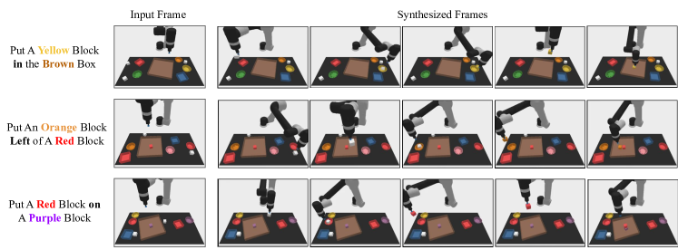
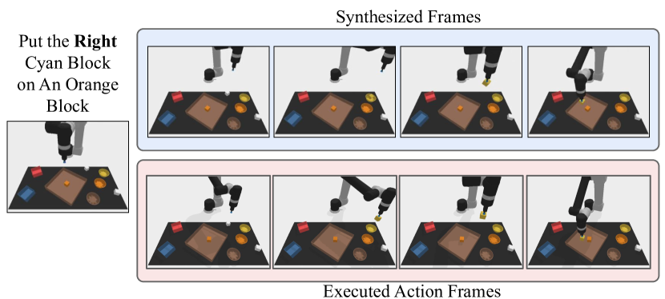
베이스라인.
제안하는 방법을 세 가지의 대표적인 개별 접근법과 비교한다. 첫째, 목표 조건부 트랜스포머(goal-conditioned transformer)를 사용하여 여러 환경에 걸쳐 학습하는 기존 연구와 비교하며, 여기서 목표는 에피소드 보상 [26], 전문가 시연 [6], 또는 텍스트 및 이미지 [24]로 지정될 수 있다. 이러한 베이스라인을 구현하기 위해, 작업 설명과 시각적 관측(Image + Transformer BC) 또는 로봇의 관절 상태(State + Transformer BC)가 주어졌을 때 실행할 후속 행동을 예측하는 트랜스포머 행동 복제(Behavior Cloning, BC) 에이전트를 구축한다. 둘째, 본 연구의 접근법이 실행할 행동 시퀀스를 회귀(regress)한다는 점을 고려하여, Trajectory Transformer [25]의 목표 조건부 행동 복제와 유사하게 실행할 미래 행동 시퀀스를 회귀하는 트랜스포머 모델(Image + TT)과 추가로 비교한다. 마지막으로, 비디오를 정책으로 사용하는(video-as-policy) 접근법의 중요성을 강조하기 위해, 이미지 관측을 조건으로 하여 (미래 이미지 프레임을 확산시키는 대신) 관절 공간에서 미래 로봇 행동을 직접 추론하는 확산 프로세스(diffusion process)를 학습하는 방법 [21, 27]과 UniPi를 비교한다. 본 연구의 방법과 각 베이스라인 모두에 대해, 사전 학습된 T5 임베딩을 사용하여 인코딩된 언어 지시사항을 정책의 조건으로 제공한다. 이 설정에서는 환경의 보상 함수에 접근할 수 없으므로 기존의 오프라인 강화학습 베이스라인을 직접 적용할 수 없다는 점에 유의해야 한다.
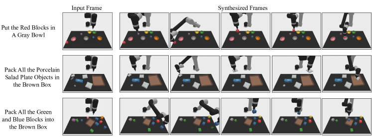
| Frame | Frame | Temporal | ||
|---|---|---|---|---|
| Condition | Consistency | Heirarchy | Place | Relation |
| No | No | No | 13.2 3.2 | 12.4 2.4 |
| Yes | No | No | 52.4 2.9 | 34.7 2.6 |
| Yes | Yes | No | 53.2 3.0 | 39.4 2.8 |
| Yes | Yes | Yes | 59.1 2.5 | 53.2 2.0 |
평가 지표. UniPi를 베이스라인과 비교하기 위해, 새로운 환경 인스턴스 및 관련 언어 프롬프트에 걸쳐 최종 작업 완료 성공률을 측정한다. 평가는 두 가지 축으로 세분화된다: (1) 학습 중에 해당 언어 지시사항을 본 적이 있는지 여부, 그리고 (2) 언어 지시사항이 직접적인 집기 및 놓기(pick-and-place)가 아닌 다른 블록과의 관계 속에서 블록을 배치하도록 지정하는지 여부이다.
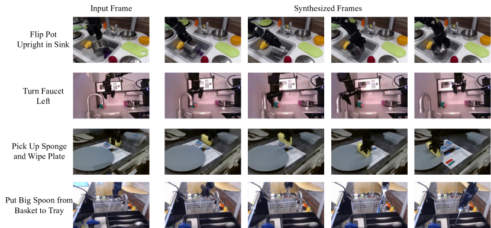
조합적 일반화. Table 1에서 UniPi가 학습 중에 본 언어 프롬프트 조합과 새로운 조합 모두에 대해 잘 일반화됨을 확인한다. 본 연구의 행동 생성 파이프라인은 Figure 4에 설명되어 있으며, 제안하는 방식을 사용하여 생성된 다양한 비디오 계획은 Figure 3에 나타나 있다.
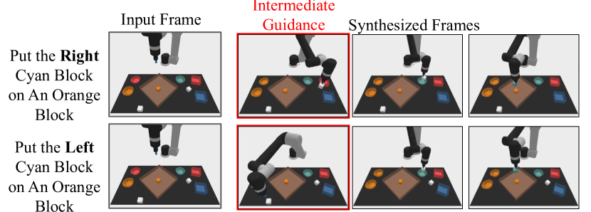
소제 분석(Ablations).
Table 2에서 학습 중에 본 언어 지시사항 및 관계형 작업에 대해 UniPi의 소제 분석을 수행한다. 구체적으로, 비디오 생성 모델에 첫 번째 관측 프레임을 조건으로 제공하는 것(프레임 조건화), 관측된 프레임을 시간 단계에 걸쳐 타일링하는 것(프레임 일관성), 그리고 시간에 따라 비디오 생성을 초고해상도화하는 것(시간적 계층 구조)의 효과를 연구한다. 프레임 일관성이 강제되지 않는 설정에서는 비디오의 시작 프레임이 아닌 프레임에 제로(zero) 이미지를 컨텍스트로 제공한다. 실험 결과 UniPi의 모든 구성 요소가 우수한 성능을 달성하는 데 필수적임을 확인했다. 프레임 조건화와 일관성은 비디오가 관측된 이미지와 일치하도록 만들었으며, 시간적 계층 구조는 더 상세한 비디오 계획을 생성할 수 있게 했다.
적응성. 다음으로 UniPi가 테스트 시점에 새로운 제약 조건에 적응하는 능력을 평가한다. Figure 7에서는 특정 블록을 색칠하고 지정된 기하학적 관계로 이동시키는 계획을 수립하는 능력을 보여준다.
4.2 다중 환경 전이
| Place | Pack | Pack | |
|---|---|---|---|
| Model | Bowl | Object | Pair |
| State + Transformer BC | 9.8 2.6 | 21.7 3.5 | 1.3 0.9 |
| Image + Transformer BC | 5.3 1.9 | 5.7 2.1 | 7.8 2.6 |
| Image + TT | 4.9 2.1 | 19.8 0.4 | 2.3 1.6 |
| Diffuser | 14.8 2.9 | 15.9 2.7 | 10.5 2.4 |
| UniPi (Ours) | 51.6 3.6 | 75.5 3.1 | 45.7 3.7 |
다음으로 UniPi가 다양한 작업 세트에 대해 효과적으로 학습하고, 테스트 시점에 학습되지 않은 새로운 환경 세트로 일반화하는 능력을 평가한다.
설정. 멀티태스크 학습 및 전이를 측정하기 위해 [28]의 언어 안내 조작 작업 제품군을 사용한다. [28]의 10가지 개별 작업 세트에 대한 시연 데이터를 사용하여 본 연구의 방법을 학습시키고, 3가지의 서로 다른 테스트 작업으로 전이하는 능력을 평가한다. 스크립트 기반 오라클 에이전트를 사용하여 환경에서 언어가 실행되는 20만 개의 비디오 세트를 생성한다. 각 언어 지시사항이 완료되는 근본적인 성공률을 보고한다. 이 환경에 대한 자세한 내용은 Appendix A에서 확인할 수 있다.
4.3 실세계 전이 (Real World Transfer)
마지막으로, 인터넷상에서 널리 이용 가능한 비디오를 활용하여 UniPi가 실세계 시나리오로 얼마나 잘 일반화되고 복잡한 행동을 구성할 수 있는지 평가한다.
설정 (Setup). 학습 데이터는 인터넷 규모의 사전학습 데이터셋과 더 작은 규모의 실세계 로봇 데이터셋으로 구성된다. 사전학습 데이터셋은 [19]과 동일한 데이터를 사용하며, 이는 1,400만 개의 비디오-텍스트 쌍, 6,000만 개의 이미지-텍스트 쌍, 그리고 공개적으로 사용 가능한 LAION-400M 이미지-텍스트 데이터셋으로 구성된다. 로봇 데이터셋은 Bridge 데이터셋 [29]에서 채택한 7.2k개의 비디오-텍스트 쌍을 사용하며, 여기서 작업 ID를 텍스트로 사용한다. 이 7.2k개의 비디오-텍스트 쌍을 학습(80%) 및 테스트(20%) 분할로 나눈다. 사전학습 데이터셋에서 UniPi를 사전학습한 후, Bridge 데이터의 학습 분할에서 미세조정(finetuning)을 수행한다. 아키텍처에 대한 자세한 내용은 부록 A에서 확인할 수 있다.
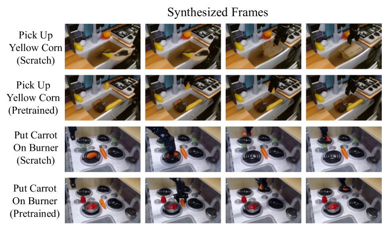
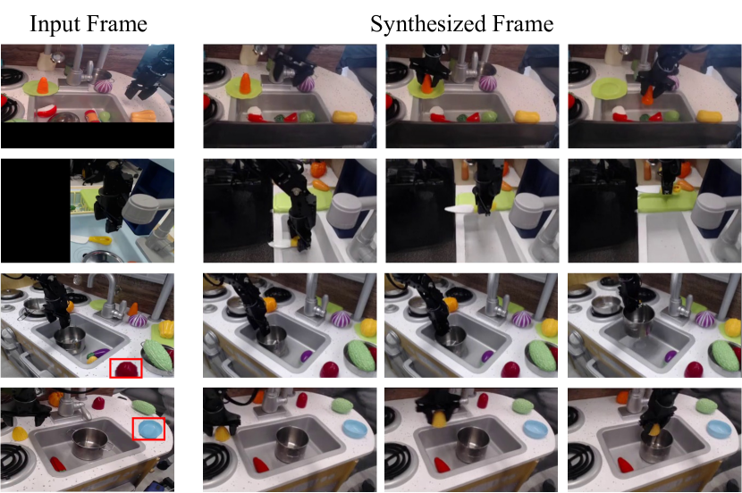
비디오 합성 (Video Synthesis). 우리는 특히 로봇 공학에 국한되지 않은 인터넷 규모의 비디오 데이터에 대한 사전학습 효과에 관심이 있다. 사전학습을 적용한 경우와 적용하지 않은 경우에 대해 Bridge 데이터로 학습된 UniPi의 CLIP 점수, FID, FVD(프레임 전반에 걸쳐 평균을 내고 32개 샘플에 대해 계산됨)를 보고한다. 표 4에 나타난 바와 같이, 사전학습을 거친 UniPi는 사전학습을 거치지 않은 UniPi보다 훨씬 높은 FID 및 FVD와 미세하게 더 나은 CLIP 점수를 달성하며, 이는 비로봇 데이터에 대한 사전학습이 로봇을 위한 계획 생성에 도움이 된다는 것을 시사한다. 흥미롭게도, 사전학습을 거치지 않은 UniPi는 종종 작업을 완료하지 못하는 계획을 합성하는데(그림 6), 이는 CLIP 점수에 잘 반영되지 않으므로 제어 특정 작업에 더 나은 생성 평가 지표가 필요함을 시사한다. 이러한 평가 지표의 부재를 해결하기 위해, 우리는 생성된 비디오로부터 작업 성공 여부를 평가하는 대리 지표(surrogate metric)를 개발한다. 구체적으로, 생성된 비디오의 마지막 프레임을 입력받아 작업의 성공 여부를 예측하는 성공 분류기(success classifier)를 학습시킨다. 처음부터 모델을 학습시키는 경우 72.6%의 성공률을 달성하는 반면, 사전학습된 모델에서 미세조정하는 경우 성능이 77.1%로 향상됨을 확인했다. 두 설정 모두에서 생성된 비디오는 대부분의 작업을 성공적으로 완료할 수 있다.
일반화 (Generalization). 인터넷 규모의 사전학습을 통해 UniPi가 학습 중에 보지 못한 테스트 분할의 새로운 작업 명령과 장면으로 일반화할 수 있는 반면, 작업 특정 로봇 데이터로만 학습된 UniPi는 일반화에 실패함을 확인했다. 구체적으로, 그림 9은 Bridge 데이터셋에 존재하지 않는 새로운 작업 명령에 대한 결과를 보여준다. 또한, 그림 9에 나타난 바와 같이 UniPi는 검은색 크롭이나 포토샵으로 추가된 물체와 같은 배경 변화에 비교적 강인하다.
| Model (24x40) | CLIP Score | FID | FVD | Success |
|---|---|---|---|---|
| No Pretrain | 24.43 0.04 | 17.75 0.56 | 288.02 10.45 | 72.6% |
| Pretrain | 24.54 0.03 | 14.54 0.57 | 264.66 13.64 | 77.1% |
5 관련 연구 (Related Work)
세계의 생성 모델 학습 (Learning Generative Models of the World). 모델 기반 강화학습 및 계획 수립을 위한 "세계 모델(world models)" 역할을 할 수 있도록 환경 보상과 역학을 생성하도록 학습된 모델들이 최근 비전 및 언어 분야를 위해 개발된 대규모 아키텍처로 확장되었다 [9, 25, 30, 31]. 이러한 연구들은 세계 모델을 학습하는 것과 계획 수립 및 정책 학습을 분리하며, 세계의 생성 모델링 목적 함수와 최적 정책 학습 사이에 불일치가 존재한다고 주장할 수 있다. 또한, 세계 모델을 학습하려면 학습 데이터가 엄격한 상태-행동-보상(state-action-reward) 형식이어야 하므로, YouTube 비디오와 같이 인터넷에서 대규모로 이용 가능한 데이터셋과는 호환되지 않는다. VPT [32]와 같은 방법은 역역학 모델(inverse dynamics model)을 학습하여 라벨이 없는 비디오에 라벨을 지정함으로써 인터넷 규모의 데이터를 활용할 수 있지만, 역역학 모델 자체는 모방 학습을 넘어 학습된 정책을 더욱 개선하기 위한 모델 기반 계획 수립이나 강화학습을 지원하지 않는다. 우리의 텍스트 조건부 비디오 정책은 세계 모델을 학습하는 동시에 계층적 계획 수립을 함께 수행하는 것으로 볼 수 있으며, 순차적 의사결정을 위해 특별히 설계되지 않은 널리 이용 가능한 데이터셋을 활용할 수 있다.
의사결정을 위한 확산 모델 (Diffusion Models for Decision Making). 최근 확산 모델(diffusion models)이 다양한 의사결정 문제에 적용되고 있다 [21, 27, 33, 34, 35, 36]. 본 연구와 가장 유사하게, janner2022planning [21]은 관절 기반 상태와 행동으로 구성된 궤적을 생성하기 위해 무조건부 확산 모델을 학습시켰고, 생성된 계획을 선택하기 위해 별도로 학습된 보상 모델을 사용했다. 반면, ajay2022conditional [27]는 원하는 보상, 제약 조건 또는 에이전트 기술로부터 행동 합성을 유도하기 위해 조건부 확산 모델을 학습시켰다. 처음부터 작업 특정 정책을 학습하는 두 연구와 달리, 범용 정책으로서 텍스트 조건부 비디오 생성을 사용하는 우리의 접근법은 인터넷 규모의 지식을 활용하여 다양한 새로운 작업과 환경에 배포할 수 있는 일반주의 에이전트(generalist agent)를 학습할 수 있다. 또한, kapelyukh2022dall [37]은 정책의 조건으로 사용할 목표 이미지를 생성하기 위해 웹 규모의 텍스트 조건부 이미지 확산을 적용한 반면, 우리의 연구는 범용 정책을 직접 학습하기 위해 비디오 확산을 사용한다.
일반주의 에이전트 학습 (Learning Generalist Agents). 비전 및 언어 도메인에서 대규모 사전학습의 성공에 영감을 받아, 최근 대규모 시퀀스 및 이미지 모델이 일반주의 의사결정 에이전트를 학습하는 데 적용되고 있다 [6, 26, 38]. 그러나 이러한 일반주의 에이전트들은 동일한 상태 및 행동 공간을 가진 환경(예: 아타리 게임)에서만 작동할 수 있거나 [26, 38], 서로 다른 환경이 고유한 상태 및 행동 공간을 갖는 시나리오에서는 부자연스러워 보일 수 있는 정교한 토큰화 [6]를 필요로 한다. 제어를 위해 맞춤형 토큰을 사용하는 것의 또 다른 단점은 사전학습된 비전 및 언어 모델의 지식을 직접 활용할 수 없다는 점이다. 반면, 우리의 접근법은 정책 학습을 위한 보편적 인터페이스로 텍스트와 이미지를 사용하므로 사전학습된 비전 및 언어 모델의 지식을 보존할 수 있다. 자동회귀 시퀀스 모델링 대신 확산을 선택한 것 또한 장기 및 계층적 계획 수립을 가능하게 한다.
텍스트 조건부 정책 학습 (Learning Text-Conditioned Policies).
다중 작업 및 일반주의 제어 정책을 학습하는 방법으로 텍스트 명령을 사용하는 연구가 점점 늘어나고 있다 [39, 40, 24, 41, 42, 43]. 비디오를 정책으로 삼는 우리의 프레임워크와 달리, 기존 연구는 특정 로봇의 행동 공간에서 언어 조건부 제어 정책을 직접 학습시키므로, 일반주의 에이전트의 교차 모폴로지(cross-morphology) 다중 환경 학습을 미해결 과제로 남겨두고 있다. 우리는 본 논문이 환경, 작업, 심지어 인간과 로봇 간의 광범위한 지식 전이를 가능하게 하기 위해 이미지를 보편적인 상태 및 행동 공간으로 제안한 최초의 논문이라고 믿는다.
6 결론 (Conclusion)
우리는 텍스트 조건부 비디오 생성을 사용하여 정책을 표현하는 것의 유용성을 입증했으며, 이것이 효과적인 조합적 일반화, 다중 작업 학습 및 실세계 전이를 가능하게 함을 보여주었다. 이러한 긍정적인 결과는 생성 모델과 인터넷상의 풍부한 데이터를 범용 의사결정 시스템을 구축하기 위한 강력한 도구로 사용하는 더 넓은 방향성을 가리킨다.
한계점 (Limitations). 우리의 현재 접근법에는 몇 가지 한계가 있다. 첫째, 기저의 비디오 확산 과정이 느릴 수 있으며, 극도로 사실적인 비디오를 생성하는 데 1분이 걸릴 수 있다. 이러한 느린 속도는 확산 과정을 더 빠른 샘플링 네트워크로 증류(distillation)함으로써 극복할 수 있으며 [44], 우리의 초기 실험에서는 16배의 속도 향상을 가져왔다. UniPi는 확산 모델의 더 빠른 속도 샘플러를 통해 더욱 가속화될 수 있다. 둘째, 본 연구에서 고려된 환경은 일반적으로 완전 관측(fully observed) 환경이다. 부분 관측 환경에서 비디오 확산 모델은 실제 물리 세계와 일치하지 않거나 왜곡된 물체 또는 움직임의 환각(hallucination)을 만들어낼 수 있다. 비디오 모델을 세계에 대한 의미론적 지식과 통합하는 것이 이 문제를 해결하는 데 도움이 될 수 있으며, UniPi를 대규모 언어 모델(LLM)과 통합하는 것은 흥미로운 향후 연구 방향이 될 것이다.
References
- [1] Tom Brown, Benjamin Mann, Nick Ryder, Melanie Subbiah, Jared D Kaplan, Prafulla Dhariwal, Arvind Neelakantan, Pranav Shyam, Girish Sastry, Amanda Askell, et al. Language models are few-shot learners. Advances in neural information processing systems, 33:1877–1901, 2020.
- [2] Aakanksha Chowdhery, Sharan Narang, Jacob Devlin, Maarten Bosma, Gaurav Mishra, Adam Roberts, Paul Barham, Hyung Won Chung, Charles Sutton, Sebastian Gehrmann, et al. Palm: Scaling language modeling with pathways. arXiv preprint arXiv:2204.02311, 2022.
- [3] Jordan Hoffmann, Sebastian Borgeaud, Arthur Mensch, Elena Buchatskaya, Trevor Cai, Eliza Rutherford, Diego de Las Casas, Lisa Anne Hendricks, Johannes Welbl, Aidan Clark, et al. Training compute-optimal large language models. arXiv preprint arXiv:2203.15556, 2022.
- [4] Alec Radford, Jong Wook Kim, Chris Hallacy, Aditya Ramesh, Gabriel Goh, Sandhini Agarwal, Girish Sastry, Amanda Askell, Pamela Mishkin, Jack Clark, et al. Learning transferable visual models from natural language supervision. In International Conference on Machine Learning, pages 8748–8763. PMLR, 2021.
- [5] Jean-Baptiste Alayrac, Jeff Donahue, Pauline Luc, Antoine Miech, Iain Barr, Yana Hasson, Karel Lenc, Arthur Mensch, Katie Millican, Malcolm Reynolds, et al. Flamingo: A visual language model for few-shot learning. NeurIPS, 2022.
- [6] Scott Reed, Konrad Zolna, Emilio Parisotto, Sergio Gomez Colmenarejo, Alexander Novikov, Gabriel Barth-Maron, Mai Gimenez, Yury Sulsky, Jackie Kay, Jost Tobias Springenberg, et al. A generalist agent. arXiv preprint arXiv:2205.06175, 2022.
- [7] Martin L Puterman. Markov Decision Processes: Discrete Stochastic Dynamic Programming. John Wiley & Sons, Inc., 1994.
- [8] Tuomas Haarnoja, Aurick Zhou, Pieter Abbeel, and Sergey Levine. Soft actor-critic: Off-policy maximum entropy deep reinforcement learning with a stochastic actor. In International conference on machine learning, pages 1861–1870. PMLR, 2018.
- [9] Danijar Hafner, Timothy Lillicrap, Mohammad Norouzi, and Jimmy Ba. Mastering atari with discrete world models. arXiv preprint arXiv:2010.02193, 2020.
- [10] Tianjun Zhang, Tongzheng Ren, Mengjiao Yang, Joseph Gonzalez, Dale Schuurmans, and Bo Dai. Making linear mdps practical via contrastive representation learning. In International Conference on Machine Learning, pages 26447–26466. PMLR, 2022.
- [11] Diederik P. Kingma and Max Welling. Auto-encoding variational bayes. CoRR, abs/1312.6114, 2013.
- [12] Yilun Du and Igor Mordatch. Implicit generation and generalization in energy-based models. arXiv preprint arXiv:1903.08689, 2019.
- [13] Bo Dai, Zhen Liu, Hanjun Dai, Niao He, Arthur Gretton, Le Song, and Dale Schuurmans. Exponential family estimation via adversarial dynamics embedding. Advances in Neural Information Processing Systems, 32, 2019.
- [14] Ian Goodfellow, Jean Pouget-Abadie, Mehdi Mirza, Bing Xu, David Warde-Farley, Sherjil Ozair, Aaron Courville, and Yoshua Bengio. Generative adversarial nets. In Advances in Neural Information Processing Systems. 2014.
- [15] Jascha Sohl-Dickstein, Eric Weiss, Niru Maheswaranathan, and Surya Ganguli. Deep unsupervised learning using nonequilibrium thermodynamics. In International Conference on Machine Learning, 2015.
- [16] Jonathan Ho, Ajay Jain, and Pieter Abbeel. Denoising diffusion probabilistic models. In Advances in Neural Information Processing Systems, 2020.
- [17] Jiaming Song, Chenlin Meng, and Stefano Ermon. Denoising diffusion implicit models. arXiv preprint arXiv:2010.02502, 2020.
- [18] Jonathan Ho and Tim Salimans. Classifier-free diffusion guidance. arXiv preprint arXiv:2207.12598, 2022.
- [19] Jonathan Ho, William Chan, Chitwan Saharia, Jay Whang, Ruiqi Gao, Alexey Gritsenko, Diederik P Kingma, Ben Poole, Mohammad Norouzi, David J Fleet, et al. Imagen video: High definition video generation with diffusion models. arXiv preprint arXiv:2210.02303, 2022.
- [20] Ruben Villegas, Mohammad Babaeizadeh, Pieter-Jan Kindermans, Hernan Moraldo, Han Zhang, Mohammad Taghi Saffar, Santiago Castro, Julius Kunze, and Dumitru Erhan. Phenaki: Variable length video generation from open domain textual description. arXiv preprint arXiv:2210.02399, 2022.
- [21] Michael Janner, Yilun Du, Joshua Tenenbaum, and Sergey Levine. Planning with diffusion for flexible behavior synthesis. In International Conference on Machine Learning, 2022.
- [22] Colin Raffel, Noam Shazeer, Adam Roberts, Katherine Lee, Sharan Narang, Michael Matena, Yanqi Zhou, Wei Li, Peter J Liu, et al. Exploring the limits of transfer learning with a unified text-to-text transformer. J. Mach. Learn. Res., 21(140):1–67, 2020.
- [23] Jiayuan Mao, Tomas Lozano-Perez, Joshua B. Tenenbaum, and Leslie Pack Kaelbing. PDSketch: Integrated Domain Programming, Learning, and Planning. In Advances in Neural Information Processing Systems (NeurIPS), 2022.
- [24] Anthony Brohan, Noah Brown, Justice Carbajal, Yevgen Chebotar, Joseph Dabis, Chelsea Finn, Keerthana Gopalakrishnan, Karol Hausman, Alex Herzog, Jasmine Hsu, et al. Rt-1: Robotics transformer for real-world control at scale. arXiv preprint arXiv:2212.06817, 2022.
- [25] Michael Janner, Qiyang Li, and Sergey Levine. Offline reinforcement learning as one big sequence modeling problem. Advances in neural information processing systems, 34:1273–1286, 2021.
- [26] Kuang-Huei Lee, Ofir Nachum, Mengjiao Yang, Lisa Lee, Daniel Freeman, Winnie Xu, Sergio Guadarrama, Ian Fischer, Eric Jang, Henryk Michalewski, et al. Multi-game decision transformers. arXiv preprint arXiv:2205.15241, 2022.
- [27] Anurag Ajay, Yilun Du, Abhi Gupta, Joshua Tenenbaum, Tommi Jaakkola, and Pulkit Agrawal. Is conditional generative modeling all you need for decision-making? arXiv preprint arXiv:2211.15657, 2022.
- [28] Mohit Shridhar, Lucas Manuelli, and Dieter Fox. Cliport: What and where pathways for robotic manipulation. In Conference on Robot Learning, pages 894–906. PMLR, 2022.
- [29] Frederik Ebert, Yanlai Yang, Karl Schmeckpeper, Bernadette Bucher, Georgios Georgakis, Kostas Daniilidis, Chelsea Finn, and Sergey Levine. Bridge data: Boosting generalization of robotic skills with cross-domain datasets. arXiv preprint arXiv:2109.13396, 2021.
- [30] Michael R Zhang, Thomas Paine, Ofir Nachum, Cosmin Paduraru, George Tucker, ziyu wang, and Mohammad Norouzi. Autoregressive dynamics models for offline policy evaluation and optimization. In International Conference on Learning Representations, 2021.
- [31] Vincent Micheli, Eloi Alonso, and François Fleuret. Transformers are sample efficient world models. arXiv preprint arXiv:2209.00588, 2022.
- [32] Bowen Baker, Ilge Akkaya, Peter Zhokhov, Joost Huizinga, Jie Tang, Adrien Ecoffet, Brandon Houghton, Raul Sampedro, and Jeff Clune. Video pretraining (vpt): Learning to act by watching unlabeled online videos. arXiv preprint arXiv:2206.11795, 2022.
- [33] Zhendong Wang, Jonathan J Hunt, and Mingyuan Zhou. Diffusion policies as an expressive policy class for offline reinforcement learning. arXiv preprint arXiv:2208.06193, 2022.
- [34] Edwin Zhang, Yujie Lu, William Wang, and Amy Zhang. Lad: Language augmented diffusion for reinforcement learning. arXiv preprint arXiv:2210.15629, 2022.
- [35] Julen Urain, Niklas Funk, Georgia Chalvatzaki, and Jan Peters. Se (3)-diffusionfields: Learning cost functions for joint grasp and motion optimization through diffusion. arXiv preprint arXiv:2209.03855, 2022.
- [36] Ziyuan Zhong, Davis Rempe, Danfei Xu, Yuxiao Chen, Sushant Veer, Tong Che, Baishakhi Ray, and Marco Pavone. Guided conditional diffusion for controllable traffic simulation. arXiv preprint arXiv:2210.17366, 2022.
- [37] Ivan Kapelyukh, Vitalis Vosylius, and Edward Johns. Dall-e-bot: Introducing web-scale diffusion models to robotics. arXiv preprint arXiv:2210.02438, 2022.
- [38] Aviral Kumar, Rishabh Agarwal, Xinyang Geng, George Tucker, and Sergey Levine. Offline q-learning on diverse multi-task data both scales and generalizes. arXiv preprint arXiv:2211.15144, 2022.
- [39] Wenlong Huang, Fei Xia, Ted Xiao, Harris Chan, Jacky Liang, Pete Florence, Andy Zeng, Jonathan Tompson, Igor Mordatch, Yevgen Chebotar, et al. Inner monologue: Embodied reasoning through planning with language models. arXiv preprint arXiv:2207.05608, 2022.
- [40] Michael Ahn, Anthony Brohan, Noah Brown, Yevgen Chebotar, Omar Cortes, Byron David, Chelsea Finn, Keerthana Gopalakrishnan, Karol Hausman, Alex Herzog, et al. Do as i can, not as i say: Grounding language in robotic affordances. arXiv preprint arXiv:2204.01691, 2022.
- [41] Corey Lynch and Pierre Sermanet. Language conditioned imitation learning over unstructured data. arXiv preprint arXiv:2005.07648, 2020.
- [42] Parsa Mahmoudieh, Deepak Pathak, and Trevor Darrell. Zero-shot reward specification via grounded natural language. In ICLR 2022 Workshop on Generalizable Policy Learning in Physical World, 2022.
- [43] Hao Liu, Lisa Lee, Kimin Lee, and Pieter Abbeel. Instruction-following agents with jointly pre-trained vision-language models. arXiv preprint arXiv:2210.13431, 2022.
- [44] Tim Salimans and Jonathan Ho. Progressive distillation for fast sampling of diffusion models. arXiv preprint arXiv:2202.00512, 2022.
- [45] Jonathan Ho, Tim Salimans, Alexey Gritsenko, William Chan, Mohammad Norouzi, and David J Fleet. Video diffusion models. arXiv preprint arXiv:2204.03458, 2022.
- [46] Chitwan Saharia, William Chan, Saurabh Saxena, Lala Li, Jay Whang, Emily Denton, Seyed Kamyar Seyed Ghasemipour, Burcu Karagol Ayan, S Sara Mahdavi, Rapha Gontijo Lopes, et al. Photorealistic text-to-image diffusion models with deep language understanding. arXiv preprint arXiv:2205.11487, 2022.
부록 A 아키텍처, 학습 및 평가 세부 사항
A.1 비디오 확산 모델 학습 세부 사항
우리는 512개의 기본 채널과 채널 배수 [1, 2, 4], 어텐션 해상도 [6, 12, 24], 어텐션 헤드 차원 64, 컨디셔닝 임베딩 차원 1024를 갖는 3개의 잔차 블록(residual block)의 Video U-Net 아키텍처를 활용하는 ho2022video [45]과 동일한 기본 아키텍처 및 학습 설정을 사용한다. 노이즈 스케줄은 범위 [-20, 20]의 로그 SNR을 사용한다. 학습 중 첫 프레임 컨디셔닝(first-frame conditioning)을 지원하도록 Video U-Net을 수정한다. 구체적으로, 컨디셔닝할 첫 프레임을 향후 모든 프레임 인덱스에 복제하고, saharia2022photorealistic [46]과 유사하게 첫 프레임을 노이즈 데이터에 채널 방향으로 연결(concatenate)하여 복제된 첫 프레임에 시간적 초해상도(temporal super resolution) 모델 조건을 적용한다. 시간 경과에 따른 프레임을 혼합하기 위해 시간적 어텐션(temporal attention) 대신 시간적 컨볼루션(temporal convolution)을 사용하여 시간 전반에 걸친 국소적 시간 일관성(local temporal consistency)을 유지하며, 이는 이전에 ho2022imagen [19]에서도 언급된 바 있다. 우리는 각 비디오 확산 모델을 배치 크기 2048, 학습률 1e-4, 10k 선형 웜업(warmup) 단계를 사용하여 2M 단계 동안 학습한다. 첫 프레임 컨디셔닝 생성 모델과 시간적 초해상도 모델에 256개의 TPU-v4 칩을 사용한다.
우리는 46억 개의 매개변수로 구성된 입력 프롬프트를 처리하기 위해 T5-XXL [22]을 사용한다. 시뮬레이션된 로봇 조작에 대한 조합 및 다중 작업 일반화 실험을 위해, 우리는 1.7B 매개변수를 가진 10x48x64 비디오(8프레임마다 건너뜀)에서 첫 프레임 컨디셔닝 비디오 확산 모델을 학습하고, 1.7B 매개변수를 가진 20x48x64(4프레임마다 건너뜀)의 시간적 초해상도 모델을 학습한다. 비디오의 해상도는 조작되는 객체(예: 이리저리 움직이는 블록)가 비디오에서 명확하게 보이도록 선택된다. 실제 세계 비디오 결과의 경우, ho2022imagen [19]에서 사용된 데이터로 사전 학습된 16x40x24 (1.7B), 32x40x24 (1.7B), 32x80x48 (1.4B), 32x320x192 (1.2B) 시간적 초해상도 모델을 미세 조정(finetune)한다.
A.2 역동학 모델 학습 세부 사항
UniPi의 역동학(inverse dynamics) 모델은 이미지 관측으로부터 시뮬레이션된 로봇 팔의 7차원 제어 입력을 평균 제곱 오차(mean squared error)를 통해 직접 예측하도록 학습된다. 역동학 모델은 3x3 컨볼루션 레이어, 잔차 연결(residual connection)이 있는 3개 레이어의 3x3 컨볼루션, 모든 픽셀 위치에 대한 평균 풀링(mean-pooling) 레이어, 최종 제어 입력을 예측하기 위한 (128, 7) 채널의 MLP 레이어로 구성된다. 역동학 모델은 그래디언트 노름(gradient norm)을 1로 클리핑하고 학습률을 1e-4로 설정하여 Adam 옵티마이저를 사용하여 총 2M 단계 동안 학습되며, 처음 10k 단계에는 선형 웜업이 적용된다.
A.3 베이스라인 학습 세부 사항
아래에서 다양한 베이스라인의 아키텍처 세부 사항을 설명한다. 각 베이스라인의 학습 세부 사항(예: 학습률, 웜업, 그래디언트 클립)은 위에 상술한 역동학 모델의 설정을 따른다.
Transformer BC [6, 26].
우리는 각각 8개의 헤드와 은닉 크기(hidden size) 512를 갖는 4개의 어텐션 레이어를 포함하는 lee2022multi [26]의 10M 모델과 동일한 트랜스포머 아키텍처를 채택한다. 이미지 특징을 추출하기 위해 잔차 연결이 있는 4개 레이어의 3x3 컨볼루션을 적용하며, 이는 T5 텍스트 임베딩과 함께 트랜스포머의 입력으로 사용된다. 추가적으로 lee2022multi [26]과 유사하게 이미지 패치의 비전 트랜스포머(vision transformer) 스타일 선형화를 실험했으나 성능이 유사함을 발견했다. 우리는 UniPi의 역동학과 유사하게 컨텍스트 길이(context length)를 4로 사용하고 4프레임마다 건너뛴다. 트랜스포머의 컨텍스트 길이를 8로 늘려보았으나 성능 향상에 도움이 되지 않았다.
Transformer TT [25].
우리는 위에 상술한 Transformer BC 베이스라인과 유사한 트랜스포머 아키텍처를 사용한다. Transformer BC에서처럼 시퀀스의 바로 다음 제어 입력을 예측하는 대신, 출력 레이어에서 다음 8개의 제어 입력(다른 베이스라인과 유사하게 4개의 제어 입력마다 건너뜀)을 예측한다. 다음 8개의 제어 입력을 자기회귀적(autoregressively)으로 예측하는 시도도 해보았으나, 추가적인 이산화(discretization) 없이는 오차가 빠르게 누적됨을 발견했다.
상태 기반 확산 모델(State-Based Diffusion) [21].
상태 기반 확산 베이스라인의 경우, UniPi의 첫 프레임 컨디셔닝 비디오 확산과 유사한 아키텍처를 사용하는데, 미래의 이미지 프레임을 확산 및 생성하는 대신 미래의 제어 입력을 서로 다른 픽셀 위치에 복제하고 UniPi와 동일한 U-Net 구조를 적용하여 상태 기반 확산 모델을 학습한다.
A.4 조합 계획 작업의 세부 사항
조합 계획(combinatorial planning) 작업에서는 블록, 색상이 있는 보울, 최종 배치 상자에 대해 무작위 6자유도(DOF) 포즈를 샘플링한다. 블록은 처음에 색상이 없는 상태(흰색)로 시작하며 색상을 얻기 위해 보울에 배치되어야 한다. 그런 다음 로봇은 배치 상자에서 원하는 기하학적 관계를 갖도록 색상이 지정된 블록을 조작하고 이동해야 한다. 에이전트의 기본 행동 공간(action space)은 로봇의 6개 관절 값과 이산 접촉 행동(discrete contact action)에 대응한다. 접촉 행동이 활성화되면 테이블에서 가장 가까운 블록이 로봇 그리퍼에 부착된다(연속적인 행동을 예측하는 방법의 경우, 접촉에 대응하도록 행동 예측 임계값 을 설정함). 다양한 모델에 대한 개별 행동 예측이 주어지면, Pybullet에서 관절 컨트롤러를 실행하여 예측된 관절 상태에 도달하도록 시도함으로써 환경의 다음 상태를 시뮬레이션한다(특정 행동이 물리적으로 불가능할 수 있으므로 타임아웃은 2초로 설정). 비디오 데이터셋의 일부만 행동 주석(action annotation)을 포함하고 있었기 때문에, 우리는 2만 개의 생성된 비디오에서 얻은 행동 주석으로 역동학 모델을 학습했다.
A.5 CLIPort 다중 환경 작업의 세부 사항
CLIPort 환경에서는 조합 계획 작업과 동일한 행동 공간을 사용하고 Pybullet의 내장 관절 컨트롤러를 사용하여 유사하게 행동을 실행한다. 학습 데이터로는 put-block-in-bowl-unseen-colors, packing-unseen-google-objects-seq, assembling-kits-seq-unseen-colors, stack-block-pyramid-seq-seen-colors, tower-of-hanoi-seq-seen-colors, assembling-kits-seq-seen-colors, tower-of-hanoi-seq-unseen-colors, stack-block-pyramid-seq-unseen-colors, packing-seen-google-objects-seq, packing-boxes-pairs-seen-colors, packing-seen-google-objects-group에서 스크립트 에이전트(scripted agent)를 사용한다. 테스트 데이터로는 put-block-in-bowl-seen-colors, packing-unseen-google-objects-group, packing-boxes-pairs-unseen-colors 환경을 사용했다. 우리는 20만 개의 생성된 비디오 전반에 걸친 행동 주석으로 역동학을 학습했다.
부록 B 추가 결과
B.1 조합 일반화(Combinatorial Generalization)에 대한 추가 결과
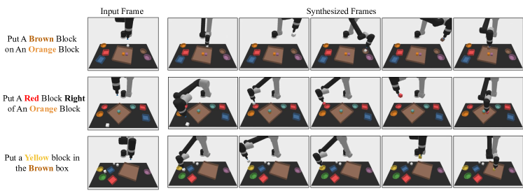
B.2 다중 환경 전이(Multi-Environment Transfer)에 대한 추가 결과
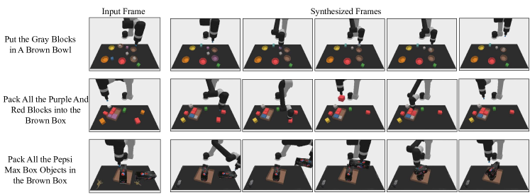
B.3 실세계 전이(Real-World Transfer)에 대한 추가 결과
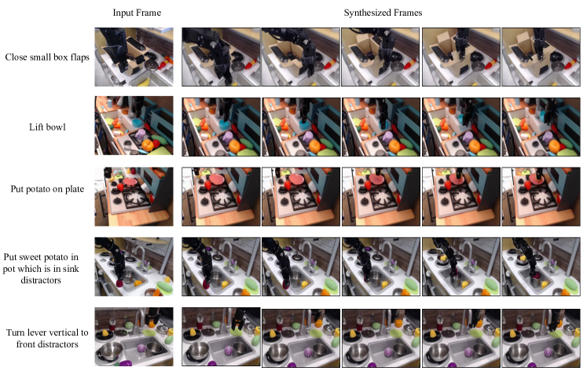